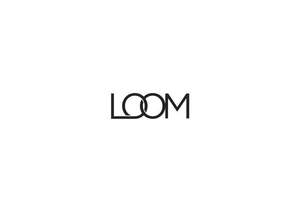

Trade Mark Journal No.2025/049 5 December 2025
UK00004299625 24 November 2025 (25,35)

- Class 25
- Clothing; Clothes; Headgear; Headwear; Hats; Gloves [clothing].T-shirts; shirts; tank tops; tops [clothing]; sweatshirts; sweaters; raincoats; cardigans; pullovers; sport jerseys; jackets; coats; rain jackets; shell jackets; vests; ponchos; kimonos; underwear; sport singlets; slips [undergarments]; bras; pajamas; socks; warm-up suits; skirts; bodysuits; leotards; unitards; dresses for women; pants; sweatpants; shorts; trousers; tights; leggings; knitwear [clothing]; waterproof jackets and pants; athletic uniforms; clothing for children; shoulder wraps [clothing]; headbands [clothing]; caps [headwear]; hats; cap peaks; caps with visors; visors being headwear for athletic use.
- Class 35
- Retail sale services of clothing, footwear, headwear, yoga accessories, yoga equipment; online retail sale services of clothing, footwear, headwear, yoga accessories, yoga equipment, bags and cosmetics; promoting the special events of others in the fields of yoga, physical fitness, meditation, healthy living, mindfulness, goal setting, leadership development and personal development; presentation of goods on communication media, for retail purposes; commercial information and advice for consumers [consumer advice shop]; organization of events, exhibitions, fairs and shows for commercial, promotional and advertising purposes; promotion of goods and services through sponsorship of sports events; outsourcing services [business assistance]; promotion services in the field of athletic events; services for promoting public awareness of the benefits of physical activity; administration of consumer loyalty programs; online adverting and marketing services in the fields of clothing; .
LOOM COLLECTIVE LIMITED